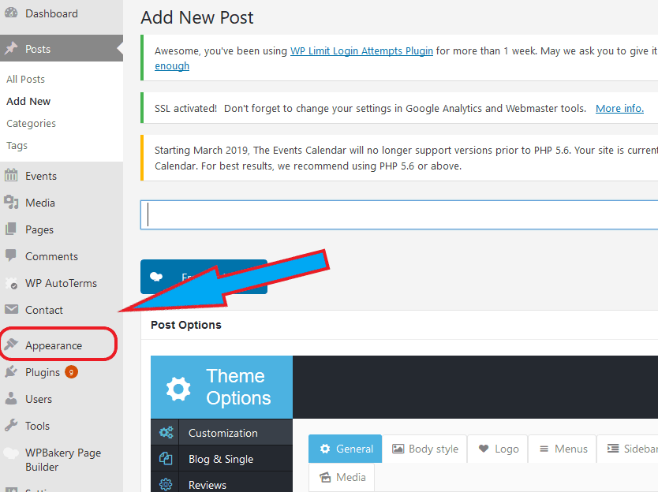
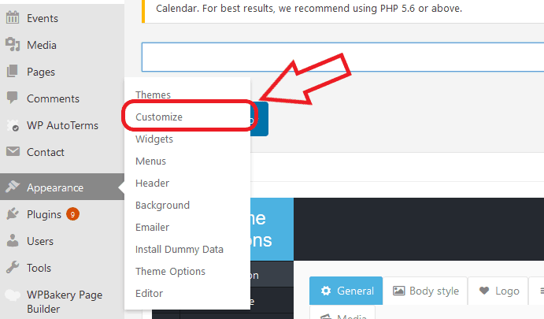
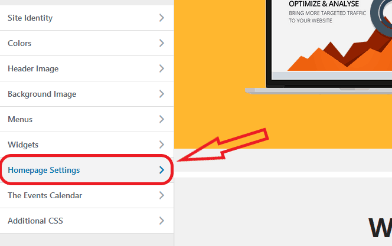
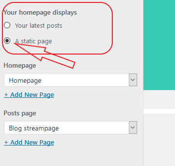
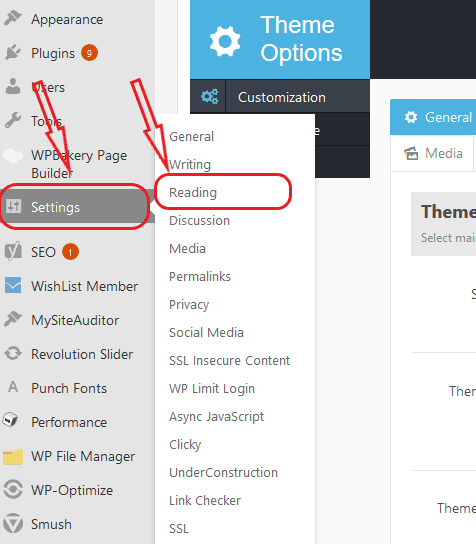

Setting Up A WordPress Site – Avoid These Common Mistakes

The Website Checkboxes of Death
-3 Tips to Avoiding These Common Mistakes When Building a WordPress Site:
A friend of mine recently called me and asked me why he seemed to not be able to create a website that looked anything like the website themes that were sold to him.
More on what I did to help him get this resolved in a minute. Pressed for time. Read the main points below: -> here
Many of us that are interested in using WordPress themes to build a beautiful site believe that all we need to do is buy a site theme we like and install it.
Unfortunately, there are a couple of things that stand in the way of your having exactly what appears on the demo site used to present you the theme when you buy it.
Rarely do they look like that straight out of the box when you make your purchase. Granted, themes don’t come in a box, but I hope you are tracking with me.
So what is usually at play? Read the points and scenarios below to solve the most common issues related to launching your new WordPress site.
1. The theme doesn’t look anything like it did when you looked at the preview and website demo.
More precisely, you install the theme and then discover the layout, the look and feel and the quality of the site is very different than what you expected.
Back to my friend, Sean. Sean is super technically inclined. As a matter of fact, he runs his own IT company. So this isn’t a matter of an illiterate user.
Sean had attempted to install multiple themes and had the same experience over and over again. He reached out of sheer frustration. When I looked at his site I quickly recognized that there is a checkbox that needed to be checked that he was unaware of.
Remember WordPress sites were built as blogging platforms. This means that WordPress themes once they are installed are typically set to the default to show the latest posts on the homepage.
However, if you are looking to design a beautiful website with sliders and beautiful images, this is usually not optimal. Although there are ways to beautify your blog posts, a static homepage is a better place to spend your time making your blog bodacious. The keyword here is “static.” You will see why in a minute.
There is a setting within the “customize” section under “Appearance,” that allows you to set your homepage to a static page that you create or to a page to dedicated to showing your latest posts.
It is automatically set to “display latest blog posts.” If you don’t know how to navigate to that particular box and to check the box that is suitable for your new web design, you will be lost wondering why your site never looks like this site that they show you when you purchase it.
Here is a WordPress example below:

How do you get there?
1. Navigate to the sidebar and hover over “Appearance”

2. Click on “Customize”

3. Navigate to “Homepage Settings”

4. Select “Static Page”
and select which page you want to set as your home page from the drop box below
2. When it comes to making your site look like the demo version, the second thing that people often overlook is that sometimes you have to install a child theme or you have to import the demo data. Depending on the particular theme and licensing of the theme, you will be faced with having to either purchase a bundled copy of the images for your own personal use or you’ll have to create your own.
Recently I chose a theme for a hotel website build. Although we loved the site as it was represented in the demo version, all of the pictures came in filtered and blurry. This drastically reduced the quality of the site.
It became clear that we could only use images that we owned and that there was no bundle package even available for purchase.
Sometimes when you are reviewing a website that you are choosing to build out, it can be a bit misleading. We often underestimate the value of the images that are being shown to us when we are purchasing a site. Much of what we find visually appealing happens in the subconscious mind.
So sometimes we might find a website appealing simply because of the images that were chosen to be displayed.
It is funny to realize what a site demo actually looks like once you remove all the lovely imagery.
Understanding this, however, is a bit of site hack to create amazing websites. With this in mind, you can go to work on making sure that your site uses the highest resolution images without sacrificing speed and by using the most visually appealing pictures available on the market, people will tend to love your site. I like to use stock images from places like stock.adobe.com.
I have found that in order to use images, there’s often an extra charge. If you ignore this, you could be in jeopardy of receiving a bill in the mail from the copyright owner of the particular images that you used without their permission. This can get expensive fast I had a friend of mine receive a bill for $700 for the unauthorized use of an image.
It’s worth mentioning that it’s important to also consider that when you use free images that you find on places like Pixabay, you can often end up with images that are tagged by Google as inappropriate.
One way to check this out is to simply do a Google reverse image look up. How does it work?
1. Type into Google “reverse image lookup or search”
2. Upload the image to Google and it will tell you what that image is related to from its experience of the image listing online.
You might be surprised what you learn when you do a Google reverse image look up.
Wrapping things up related to importing demo data.
The last thing I’d like to mention is that there is usually a clear way of importing a demo version into your website if your site offers that function.
After installation and after you have checked the box to make the homepage a static page instead of a list of your most recent blog posts, look at the site. If it doesn’t look like the version that you saw online when you purchased the theme, you’ll need to look into importing the demo content.
There should be language or information within the licensing or the purchase information where you bought the theme that describes what your usage rights are of the images that you purchase and how to import them. I usually look in the “text” documentation that came with the theme.
I know that it can seem pretty daunting reading through the text file, but realize that web developers and engineers usually only put really relevant things in this document, and although it isn’t usually pretty, all the info you need is there. They don’t usually write flowery sentences. It usually straight and to the point.
3. One of the biggest checkbox mistakes that I’ve noticed is also a small box buried in the WordPress theme that enables the search engines to crawl your site.
How do you find it?
Go under “Settings” “Read and Write” and look for a box that says “discourage search engines from indexing your site” and make sure that this box is not checked.

Is this making sense? Questions? Go to My Contact Page to Hire me.
I have found that many sites can come with this box already checked. As a matter of fact, when we are working on sites in a production environment before the site is ready to go live, we often use this button to try to make sure that Google, Yahoo, and Bing, as well as other search engines, don’t index our site prematurely.
The reason why we want to discourage the search engines from doing this is that as we develop the site we are going to be making lots of changes. If Google crawls it today and indexes the site as it is right now and I make 15 changes tomorrow I may not the search engines to evaluate the quality/authority of my site page from an older version.
Further, it may take some time for the crawlers to come back and re-crawl the site based on the authority the site and other factors that only the search engines know. With that in mind, my site may be assigned a lower ranking for longer.
It is wise to keep this checked until you are ready to go live with the site, however, if you noticed that your site is not indexed on the search engines after you have launched it, and you seem to not be able to find it, then you might want to check this out. You may discover you have inadvertently left this box checked.
One final thought about discouraging search engines from indexing your site.
Remember Google is like a giant library. We call it an index but it might as well be called an online library. All of the documents represent books that are searchable by users who are putting in certain search terms and queries.
Do you want to make sure that Google can always find your book quickly and easily and make sure that the latest version is the one that’s being displayed?
Make sure that the “Discourage search engines from indexing this site” box is not checked.
Thanks for diving into this article. I hope that it answered your questions and has put you on the path to success in your next site launch.